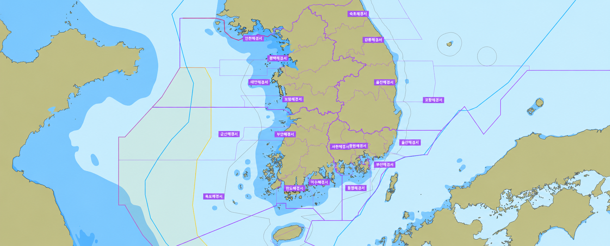

여객선 분석
29:54
어현상 (경위)
시스템 관리자 · ID/PW
여객선분석
연안여객선 실시간 운항현황과 운항 중인 여객선 위치 확인
항구 · 정상 운항
항구 · 통제 포함
항구 · 전면 비운항
운항 중 여객선
해경 관할구역(굵은 선: 지방청)
북방한계선(NLL)
가상중간선(EEZ)
특별법
한중잠정조치수역
운항 중 여객선 (선박 배정 미연결)
이 화면은 참고용입니다. 실제 출항 여부는 선사 및 운항관리센터 공지를 확인하세요.